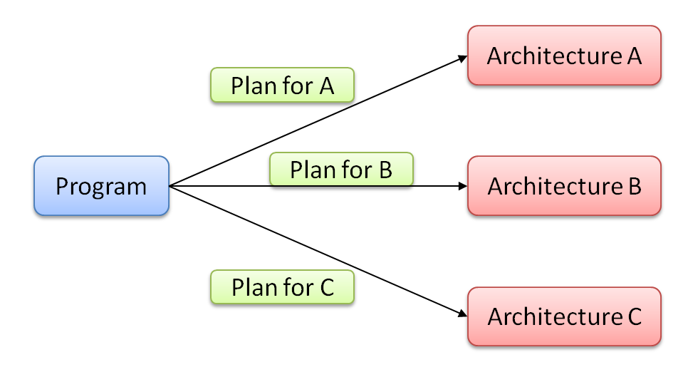

Why I Am Developing Amber
programmer> I've finished writing the program.
programmer> Compile it to C code and evaluate performance.
compiler> Compiling with default plan ................ done.
compiler> Running the program ................ done.
compiler> This is the performance reports:file function frequency exectime(total) exectime(average) ratio .... .... foo() XXX times YY.YYY sec 0.ZZZ sec 83% ....programmer> Hmm... foo() seems too slow. Let's tune it. Some advices?
compiler> Matrix multiplication in line 110, file XXX, is considered hotspot.109 ... 110 A = B*A + C 111 ...compiler> Following parallelization options might be available.
- OpenMP (...)
- SIMD extension (...)
compiler> But, I couldn't complete alias analysis between A,B and C.
programmer> It's no problem. Try parallelize the program opportunistically.
compiler> Ok. Parallelizing ................ done.
compiler> This is the generated code.110 #pragma omp parallel for 111 for (... ) { 112 ... ...programmer> Well, compile it and evaluate again.
compiler> Compiling with the new plan ................ done.
compiler> Running the program ................ done.
compiler> This is the performance reports:file function frequency exectime(total) exectime(average) ratio .... .... foo() XXX times YY.YYY sec 0.ZZZ sec 32% ....programmer> Very nice, save this compilation plan and finish.
I want to realize this kind of Interactive Compilation System and I'm developing Amber for it.
I have a strong interest in High-Performance Computation (HPC) using super computers. Of course, Amber is a general purpose language but my motivation has been significantly impacted by issues in HPC field. My challenge is to establish a methodology to use millions of cores effectively. To achieve high performance with such a huge number of cores, integration of human and computer intelligence is necessary. I explain my idea's point by point in the following sections.
Separation of programs and compilation plans
There is one-to-many correspondence between a program and computers because we usually want to use one program for several machines for many years.
However, the optimal ways to speed up prgrams differ from one architecture to another especially for parallel architectures.
The result is badly-swollen programs which contain a large number of #if, #pragma and almost same but slightly different functions.

Separation of programs and compilation plans is a natural solution for this situation. Keep the original program clean and write a machine-dependent compilation plan as other files. This file may includes usual compiler options but also program translations (e.g., unroll this loop X times, inline this procedure call, modify data layout of this object, ...).

Ask the compiler where and how to tune
Ok, let's write a compilation plan for architecture A. Then you may be stumped about where and how to optimize the program. You have to learn performance profiler to know program's hotspot. You also investigate optimal way for speedup. And to do that, you have to learn characteristics of architecture A deeply (e.g., network structure, memory hierarchy, cache memories, instruction sets). You may require a lot of trial and error.
Many of these tasks are the specialities of compilers. Why don't we ask them about tuning?
Only programmers know correctness of programs
As you know, compilers always have to do correct program translation. Here is two big problems.
First, analysis of correctness is difficult or impossible for compilers in many cases. For automatic parallelization, precise alias analysis and dependency analysis are necessary but these are NP-hard in general. It is often impossible when you use third party libraries and its source code is unavailable. However, you must know whether your algorithm is essentially parallel or not.
Second, compilers' criteria of correctness are too strict. For example, is translation from ((x + y) + z) + w to (x + y) + (z + w) correct?
When variables are finite floating point numbers, the results are different in general.
Such translation is not a problem for humans in many cases, however compilers never know its correctness.
This is just a trivial example, and similar situation occurs very often.
Compiler options, pragmas and attributes (e.g., restrict attribute in C) are solutions of current compilers. The problem of this solution is learning cost as described in previous section.
Our place to go to is the Human-computer interaction system.
Write programs in high-level abstraction
(... writing ...)